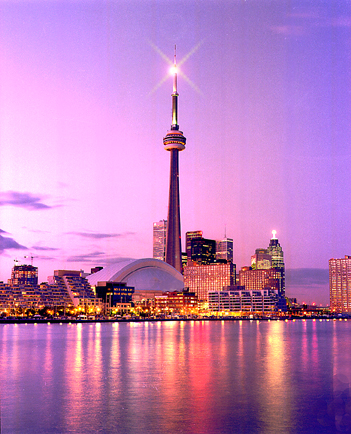

Introduction
Toronto, the capital of the province of Ontario, is a major Canadian city along Lake Ontario’s northwestern shore. It's a dynamic metropolis with a core of soaring skyscrapers, all dwarfed by the iconic CN Tower. Toronto also has many green spaces, from the orderly oval of Queen’s Park to 400-acre High Park and its trails, sports facilities and zoo.
“Canada will be a strong country when Canadians of all provinces feel at home in all parts of the country, and when they feel that all Canada belongs to them.”
World Famous
Canadian National tower

Downtown
Toronto
The CN Tower (French: Tour CN) is a 553.3 m-high (1,815.3 ft) concrete communications and observation tower in downtown Toronto, Ontario, Canada.[3][6] Built on the former Railway Lands, it was completed in 1976, becoming the world's tallest free-standing structure and world's tallest tower at the time. It held both records for 34 years until the completion of Burj Khalifa and Canton Tower in 2010.
Woodbine Beach
Lake Shore Boulevard
Toronto
Woodbine Beach is the largest of the four beaches in the Beaches in Toronto, Ontario, Canada. Located along Lake Shore Boulevard at the foot of Woodbine Avenue, it is next to Ashbridge's Bay and Kew-Balmy Beach. Woodbine beach is the westernmost beach in the Beaches, and the series of beaches extend east until the RC Harris Water Treatment Plant.[1] The beach runs parallel to the boardwalk and the Martin Goodman Trail.
TO LEARN MORE:
Candaian-Tourism
Woodbine-Beach
Top 5 Beaches in Toronto